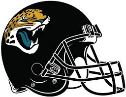

|  | Joshua HowardThe Founder and Creator of the To-Five Website. Network Systems Administration. United States Air Force Veteran. |
I am a United States Air Force Veteran where I worked as Desktop Support and SharePoint POC at Grand Forks AFB North Dakota. I graduated from ITT Technical Institute with a degree in Network Systems Administration. I have worked in the Technical industry for over 12 years. I love football, my favorite team is the Jacksonville Jaguars , despite them not being very good. I love to walk, I walk around 15-22k steps daily. I love being outside, swimming, animals, technology, sports and my family. I am learning JavaScript, html and CSS.
2009-2011 Desktop Support for the United States Air Force
2011-2012 Premiere Help Desk at Meril Lynch
2012-2021 Business Analyst at Deutsche Bank
| Dates | Work |
|---|---|
| 2009-2011 | Desktop Support for the United States Air Force |
| 2011-2012 | Premiere Help Desk at Meril Lynch |
| 2012-2021 | Business Analyst at Deutsche Bank |
| 2022-2022 | Data Analyst/Business Analyst for Ameritas/Bluestar Retirement Services |
| Table Footer |
|
|
| 🏈My Hobbies🎮 | 🎉Contact Me📝 |